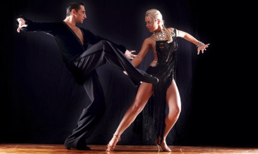

— буквально так можно описать историю бачаты, которая завораживает нежной и страстной хореографией.
Когда-то этот танец был под запретом в высших кругах. Но мир меняется, как и все вокруг. И теперь вечеринку в стиле латино сложно представить
без бачаты. Ее танцуют все, кто живет настоящими и искренними чувствами.
Бачата — один из самых простых по хореографии латиноамериканский танец. Его основу составляет очень близкое нахождение партнеров по отношению
друг к другу во время исполнения фигур. В этом проявляется главная особенность стиля — чувственный романтизм. При этом все движения очень плавные,
волнообразные, тела танцоров часто соприкасаются, что придает танцу еще больше волнительных моментов.
40 лет потребовалась этому направлению, чтобы предстать перед публикой в том виде, в котором оно известно сейчас. Примерно в начале 80-х годов
бачата приобретает все более танцевальный характер. Одновременно с этим стиль пользуется огромной популярностью благодаря двусмысленным текстам,
которые были наполнены сексуальным контекстом.
В наши дни бачата пользуется большой популярностью среди любителей латиноамериканской танцевальной культуры. Это очень многогранный танец,
в который невозможно не влюбиться. Достаточно несколько секунд посмотреть на чувственные движения танцоров, чтобы ощутить искры страсти между ними
и остаться в плену этого стиля.
